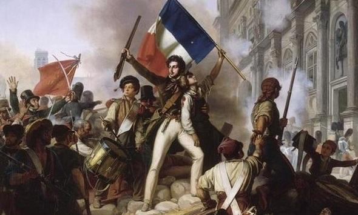
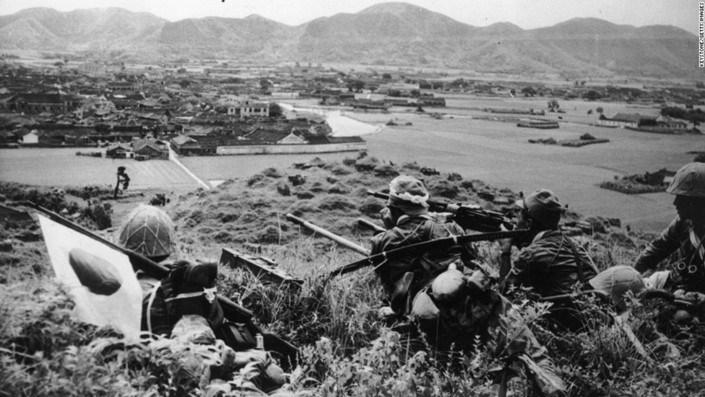

En este curso, exploraremos los eventos más importantes que marcaron la historia de la humanidad, desde la Revolución Francesa hasta la Segunda Guerra Mundial. Estudiaremos los contextos sociales, políticos y económicos que influyeron en estos momentos cruciales y su impacto en el mundo moderno.
Objetivos:
Comprender los antecedentes y las consecuencias de eventos clave en la historia mundial.
Analizar los factores sociales, políticos y económicos que influyeron en estos eventos.
Estudiar la evolución de las ideas y movimientos que transformaron el mundo.
Recursos
Revolución Francesa

Aprende sobre las causas, el desarrollo y las consecuencias de la Revolución Francesa, un evento clave que definió el rumbo de Europa y del mundo.
Temas cubiertos:
Causas sociales, políticas y económicas de la Revolución.
Principales eventos y figuras clave: Robespierre, Luis XVI, y la toma de la Bastilla.
Impacto de la Revolución en la política europea y mundial.
Segunda Guerra Mundial

Descubre los momentos clave de la Segunda Guerra Mundial, un conflicto global que cambió la política, la economía y las relaciones internacionales para siempre.
Temas cubiertos:
Causas y antecedentes de la guerra: Tratado de Versalles y el ascenso del fascismo.
Principales batallas y frentes: Europa, África y el Pacífico.
El impacto de la guerra: la creación de la ONU, el comienzo de la Guerra Fría y la reconstrucción mundial.